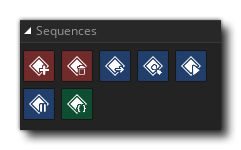

The Sequence action library is where you can create and destroy sequences as well as play/pause them and get information about them. The available actions are all listed below:
| Create Sequence Element | |
| Destroy Sequence Element | |
| Get Sequence Position | |
| Set Sequence Position | |
| Play Sequence | |
| Pause Sequence | |
| If Sequence Exists |